Arbeit & Gewerbe
Rechnungen schreiben mit PDF und E-Mail, Angebote, Zahlungserinnerung, Einnahmen-Überschuss-Rechnung (EÜR), Fahrtenbuch, Zeiterfassung, Mitarbeiter und Nachunternehmer.
Kostenlose Testversion · Windows und Android · iPhone in Vorbereitung
Sie sehen auf einen Blick, was vom Nebengewerbe neben dem Job wirklich bleibt.
Rechnungen schreiben, Einnahmen-Überschuss-Rechnung (EÜR), Steuerplanung, Nebenkosten und Verträge – die Software für Angestellte mit Nebengewerbe und für Kleinunternehmer. Ihre Daten bleiben verschlüsselt bei Ihnen.
Kein Verkauf, kein Abo, keine Zahlungsdaten · keine Cloud-Pflicht
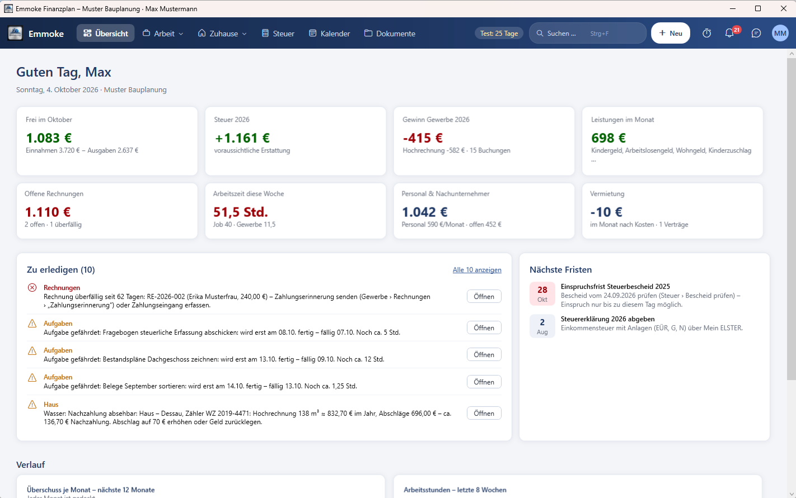
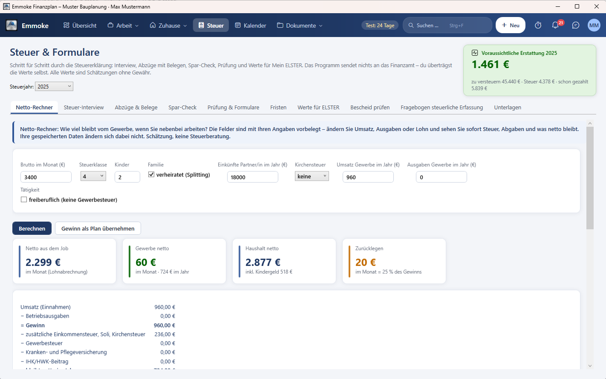
Einfach ausprobieren: Umsatz antippen oder eintippen, Kosten und Gehalt anpassen – das Ergebnis ändert sich sofort. Gerechnet wird mit derselben Logik wie im Netto-Rechner des Programms.
Beispielrechnung – keine Steuerberatung. Steuerjahr 2026, ohne Kinder, Kirchensteuer wahlweise 9 %, Gewerbe im Nebenberuf (gesetzlich krankenversichert über den Job), Werte zwischen den Stufen gemittelt. Ihre genaue Rechnung macht das Programm mit Ihren eigenen Angaben. Die Eingaben bleiben in Ihrem Browser.
Echte Ansichten aus dem Programm – mit den Beispieldaten „Max Mustermann“.
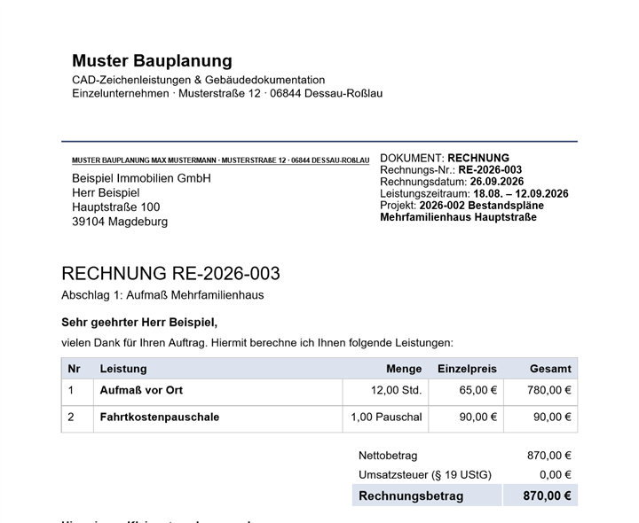
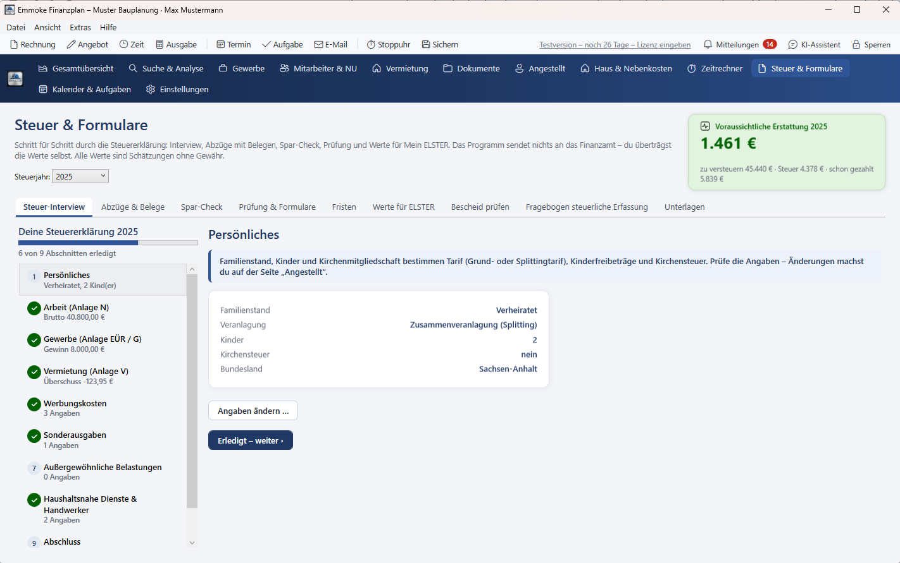
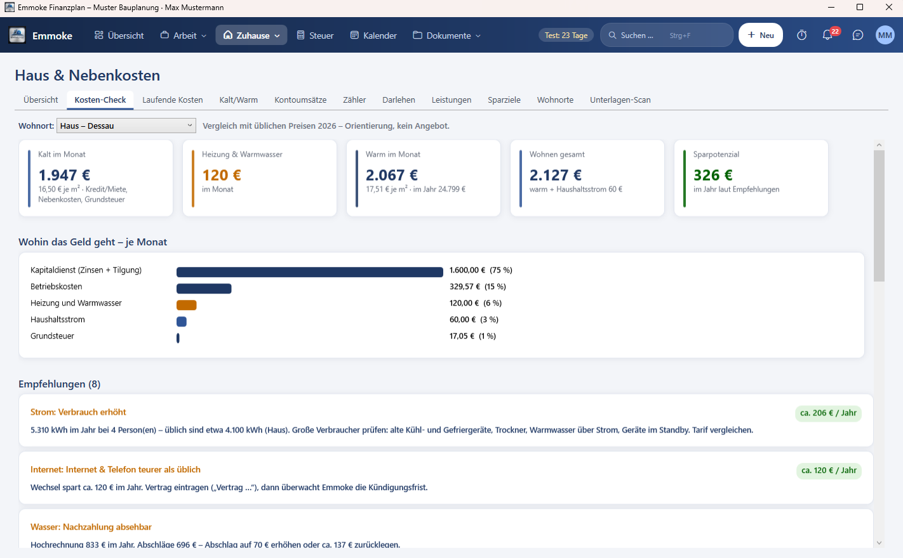
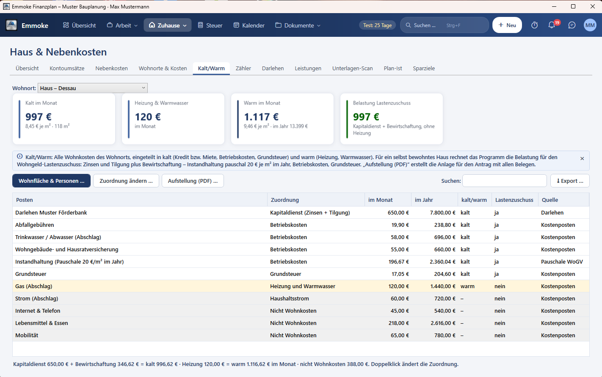
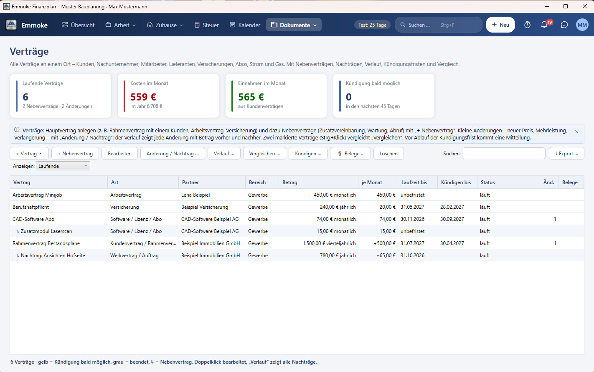
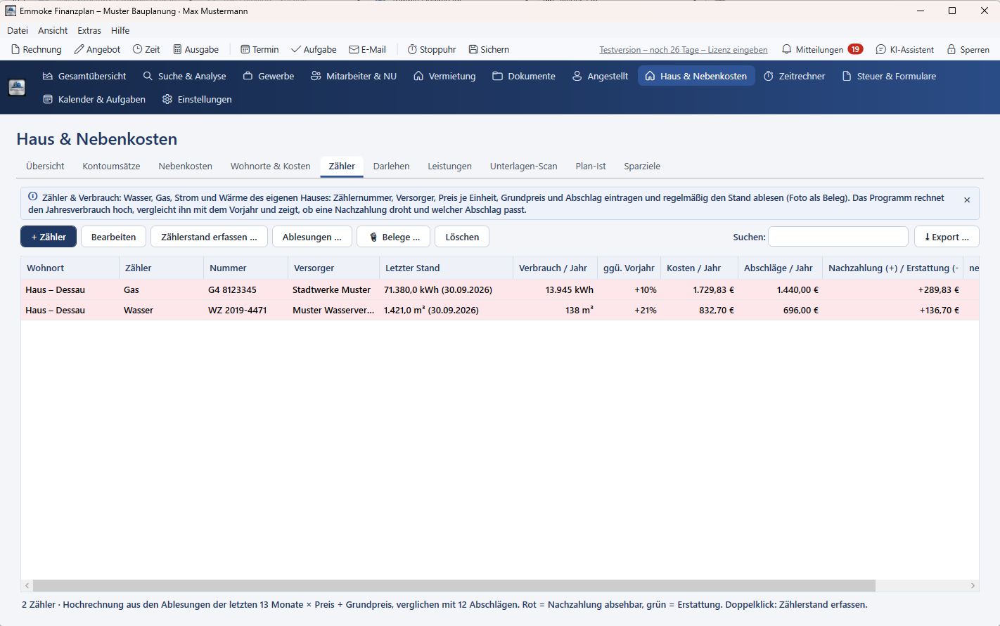
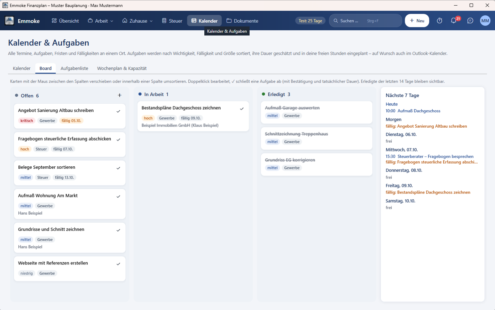
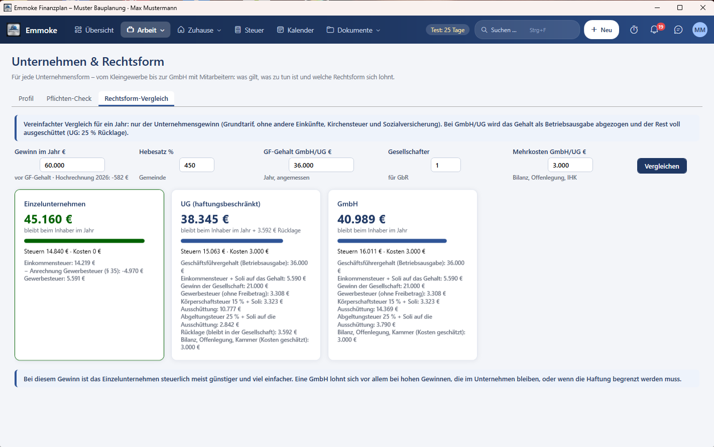
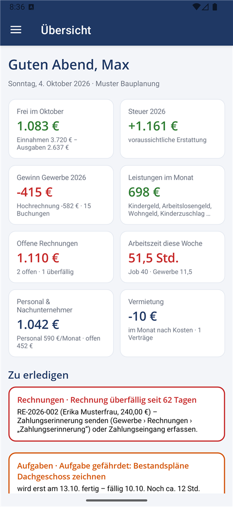
Sechs Bereiche – oben in einer Leiste, ohne Suchen. Jede Seite erklärt sich selbst und zeigt, was als Nächstes zu tun ist.
Rechnungen schreiben mit PDF und E-Mail, Angebote, Zahlungserinnerung, Einnahmen-Überschuss-Rechnung (EÜR), Fahrtenbuch, Zeiterfassung, Mitarbeiter und Nachunternehmer.
Steuerplanung für Job und Gewerbe, Steuer-Interview, Spar-Check, Werte für ELSTER, Fristen und Prüfung des Steuerbescheids mit Einspruchsfrist.
Wohnkosten kalt und warm, Kosten-Check mit Tarifbewertung, Zähler mit Hochrechnung, Hauskredit, Leistungen wie Kindergeld oder Wohngeld.
Vom Kleingewerbe bis zur GmbH: Pflichten-Check je Rechtsform, Rechtsform-Vergleich, Kleinunternehmer-Grenze mit Ampel.
Termine mit Erinnerung, Aufgaben-Board, Wochenplan nach Ihrer freien Zeit, Abgleich mit Outlook.
Verträge mit Kündigungsfristen und Kündigungsschreiben, Belege an jedem Eintrag, Archiv nach Jahr und Art.

🔒 Ihre Daten werden verschlüsselt gespeichert. Ihre Finanzdaten werden mit moderner AES-256-GCM-Verschlüsselung geschützt. Das Passwort wird nicht gespeichert. Auch Sicherungskopien und der Cloud-Abgleich nutzen nur die verschlüsselte Datei.
Emmoke Finanzplan befindet sich in Entwicklung und wird zurzeit nicht verkauft. Sie können das Programm kostenlos ausprobieren:
Vorabversion: Funktionen können sich ändern oder Fehler enthalten. Bitte sichern Sie Ihre Daten regelmäßig.
Zum DownloadVersion · Kostenlose Testversion.
Bitte zuerst bestätigen – dann werden die Download-Knöpfe freigeschaltet.
Setup für den PC (64 Bit). Benötigt .NET 10 – das Setup bietet es bei Bedarf an.
Für Windows ladenApp-Datei (APK). Auf dem Handy öffnen und „Aus dieser Quelle installieren“ erlauben. Google Play in Vorbereitung.
Für Android ladenBenutzerhandbuch ansehen (PDF) · Anleitung Schritt für Schritt
Anbieter: Emmoke – Sewar Khalil, Einzelunternehmen in Dessau-Roßlau (Deutschland) · Impressum · Lizenzen Dritter
Offizielle Downloads gibt es nur über diese Seite emmoke.github.io – die Dateien liegen bei GitHub im Konto „Emmoke“. Prüfen Sie nach dem Herunterladen die SHA-256-Prüfsumme (Windows: Get-FileHash Datei in PowerShell). Die Android-App ist mit dem oben genannten Zertifikat signiert; Updates installiert Android nur, wenn das Zertifikat gleich ist. Das Windows-Setup ist noch nicht mit einem gekauften Code-Signatur-Zertifikat signiert – Windows SmartScreen kann deshalb warnen. Änderungsprotokoll und alle Versionen.
Emmoke ist ein kleines Einzelunternehmen aus Dessau-Roßlau, Inhaber Sewar Khalil. Das Programm ist aus einer eigenen Excel-Planung für Job, Gewerbe und Haushalt entstanden und wird Schritt für Schritt weiterentwickelt. Rückmeldungen und Wünsche sind willkommen: emmoke@outlook.de.
Angaben zum Anbieter: Impressum
Emmoke ist derzeit kostenlos. Wenn Ihnen das Programm gefällt und Sie die weitere Entwicklung freiwillig unterstützen möchten, können Sie Emmoke hier unterstützen.
Die Unterstützung ist freiwillig und nicht Voraussetzung für die Nutzung. Sie erhalten dafür keine Gegenleistung – auch keine Verlängerung der Testphase oder zusätzliche Funktionen. Emmoke ist kein gemeinnütziger Verein; es gibt daher keine Spendenquittung. Die Zahlung läuft über den Zahlungsdienst, den der Knopf öffnet.
Wie gefällt Ihnen Emmoke? Ihre Meinung hilft, das Programm besser zu machen.
So prüfen wir Bewertungen: Wir veröffentlichen nur Bewertungen, die uns per E-Mail von Testerinnen und Testern erreichen und deren Veröffentlichung zugestimmt wurde. Wir lesen jede Bewertung vor der Freischaltung, veröffentlichen positive und negative gleichermaßen und entfernen nur beleidigende oder rechtswidrige Inhalte. Für Bewertungen wird nichts bezahlt oder angeboten.
Verschlüsselt auf Ihrem PC. Wenn Sie PC und Handy nutzen, wählen Sie einen eigenen Cloud-Ordner (OneDrive, iCloud Drive, Google Drive). Der Hersteller hat keinen Zugriff.
Nein, zurzeit nicht. Emmoke gibt es nur als kostenlose Testversion. Es entstehen keine Kosten und kein Abo.
Das steht noch nicht fest. Falls es später eine kostenpflichtige Version gibt, wird das vorher deutlich angekündigt – niemand wird automatisch belastet, und Ihre Daten aus der Testphase bleiben erhalten.
Ab 5 Tagen vor dem Ende können Sie die Testphase im Programm zweimal kostenlos um je 30 Tage verlängern – insgesamt bis zu 90 Tage. Danach ist eine weitere Verlängerung kostenlos per E-Mail möglich. Ihre Daten bleiben immer erhalten.
Nein. Emmoke schätzt Steuern, bereitet Werte für ELSTER vor und erinnert an Fristen. Das ist keine Steuer- oder Rechtsberatung; verbindlich sind Finanzamt, Steuerberatung und Anwalt. Preis-Bewertungen im Kosten-Check sind Orientierungswerte, keine Angebote.
Für Angestellte mit Nebengewerbe, Kleinunternehmer, Selbstständige bis zur kleinen GmbH – und für alle, die Haushalt, Nebenkosten und Verträge im Blick behalten wollen.
Neue Testversionen gibt es hier auf der Webseite. Ihre Daten bleiben beim Update erhalten.